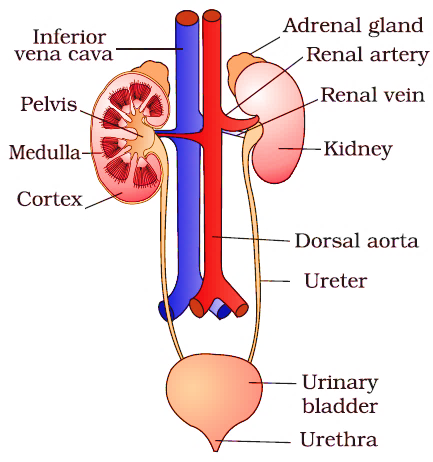
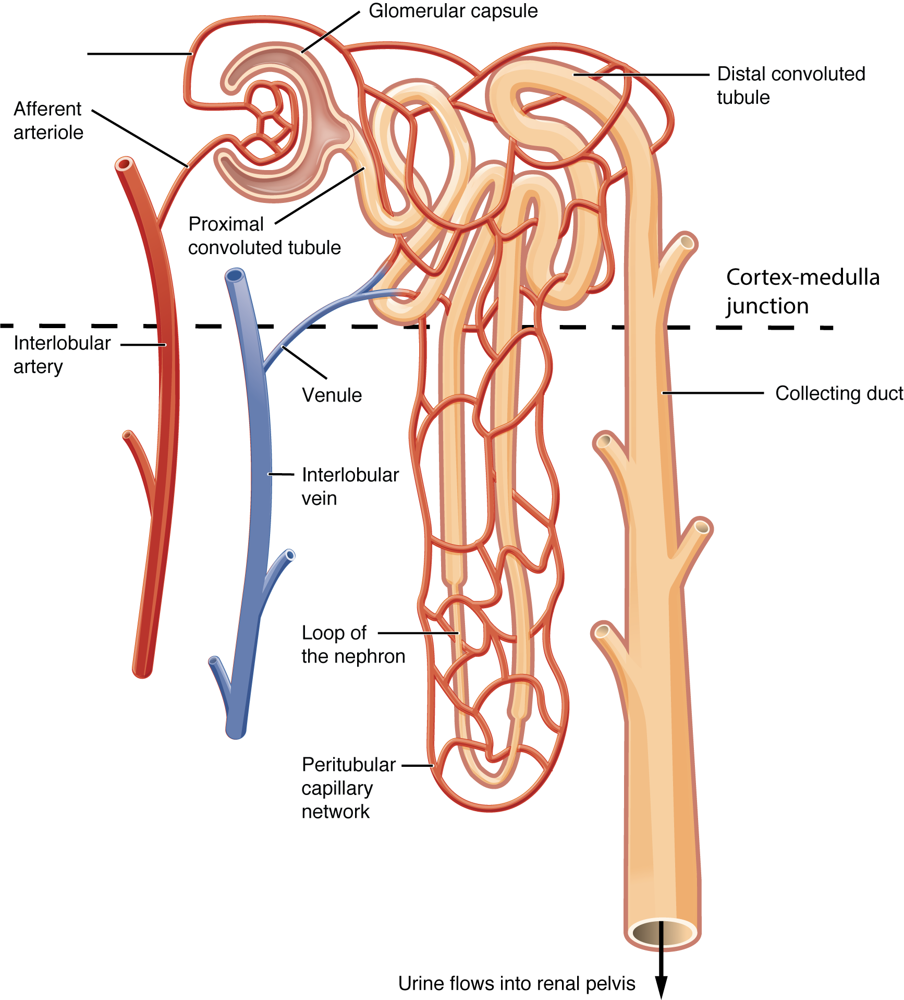

Excretion - The metabolic activities in the body generate various kinds of waste. It is the process by which waste is removed from our body.
Digestive waste
Respiratory waste
Nitrogenous waste
Human Excretory System - It consists of two kidneys, ureters, urinary bladder, and urethra.
After food is digested by our digestive system, it is excreted through the anus.
During the exchange between lungs and blood vessels, the lungs absorb CO2 which is then exhaled through the nose/mouth.
Kidneys - They filter the blood and remove waste products.
Ureters - They transport urine from the kidneys to the urinary bladder.
Urinary bladder - It stores the urine.
Urethra - It eliminates urine from the body.
Nephrons - Nephrons are the filtration units of the kidneys. They consist of a tube connected to a cup-shaped structure called Bowman's capsule.
Bowman's capsule - It filters the blood and collects urine.
Loop of Henle - Reabsorption of glucose, amino acids, and water.
Ureters - They transfer urine to the urinary bladder.
Urinary bladder - It stores urine.
Urethra - It eliminates urine from the body.
Plants remove oxygen through stomata.
Excess water is removed through stomata via the transpiration process.
Plants also shed old leaves and bark.